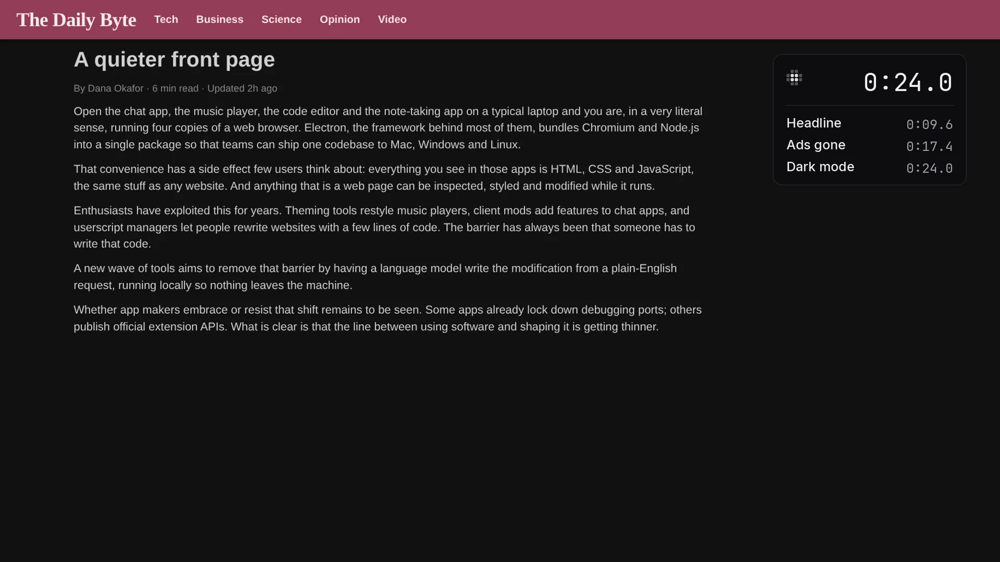

Take what
they won’t ship.
Change any app in one sentence. Free and open source.

What they won’t ship.
Four things you can stop asking for.
Bring one feature over. The other app has it. Now this one does.
Delete the paywall. Point at the box. It goes.
Add the AI they refused. Summarize, rewrite or explain, in any app.
Fix the bug tonight. Their team can take months.
One sentence. No ticket.
Real apps. Drag across a picture.
Three steps. Their files never change.
Obsidian on Linux, 7.8 seconds.
-

Point at it. Press ⌥Space, or CtrlShiftSpace.
-

Say what you want. Type it, or hold the shortcut and talk.
-

Save it. It comes back next time. Undo puts the app back.
Private by design.
Your apps, your model, your computer.
- Kept on your computer.
Your changes live on your machine, beside the app.
- Your model, your call.
What you point at goes to the model you chose, and only when you ask.
- Their files stay theirs.
Morse never edits the app. Updates install as usual.
Open source under the MIT license. Read the source Privacy policy
Apps you already use.
Desktop apps built from web pages, and websites in your browser.
Tested on Linux and in Chrome. Not yet on macOS or Windows. What was tested
Questions, answered.
Can I take a feature from one app to another?
Yes. Describe it, and Morse builds it in this app’s own look. It cannot bring an account or a catalog you do not have.
Can I delete a paywall?
When it is a box on a page that already loaded, yes. Morse does not sign you in, and cannot fetch a story the site never sent.
Can I add AI to an app that has none?
Yes. Point and say summarize this, rewrite this, or explain this. Morse uses Claude Code, Codex, or your API key.
Can I fix a bug myself?
When you can see it, yes. The fix runs on your computer. A bug on their server stays theirs.
What does it cost?
Morse is free. Your model costs what it costs you now. A change is usually one request.
Which apps work?
Websites in your browser, and desktop apps built from web pages, like Visual Studio Code, Obsidian and Logseq. Apps like Finder or Word aren’t built from web pages, so they don’t work.
What if the app updates?
Updates install as usual. If one breaks a change, click Fix it and your model writes it again.
Is it safe to install changes other people made?
Before you install one, Morse says what it does and shows its code. One shortcut turns every change off.
Then stop asking them. Download Morse.
Free and open source. It opens Chrome, Edge, Brave, Arc and Vivaldi too, still signed in.
Every download
- Mac with Apple silicon · Mac with Intel · Windows · Linux
- Morse isn’t signed yet. The first time on a Mac: System Settings, Privacy & Security, Open Anyway. On Windows: More info, then Run anyway.
- Or on a Mac, paste
curl -fsSL https://raw.githubusercontent.com/sam-siavoshian/RRAA/main/install-app.sh | shin Terminal. - Working on Morse? The developer guide.